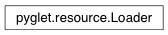

Loader Class¶
-
class
Loader(path=None, script_home=None)¶ Load program resource files from disk.
The loader contains a search path which can include filesystem directories, ZIP archives and Python packages.
Variables: - path – List of search locations. After modifying the path you must call the reindex method.
- script_home – Base resource location, defaulting to the location of the application script.